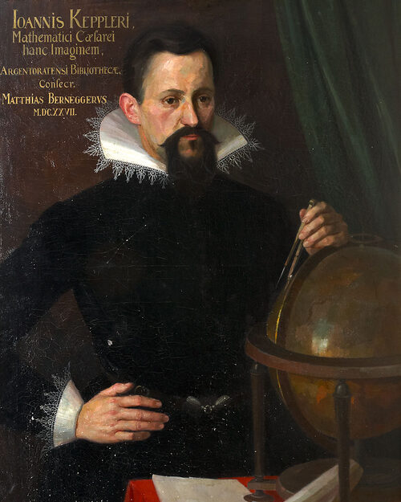
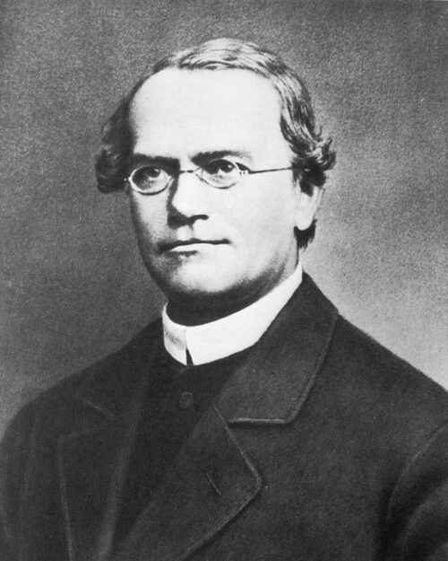
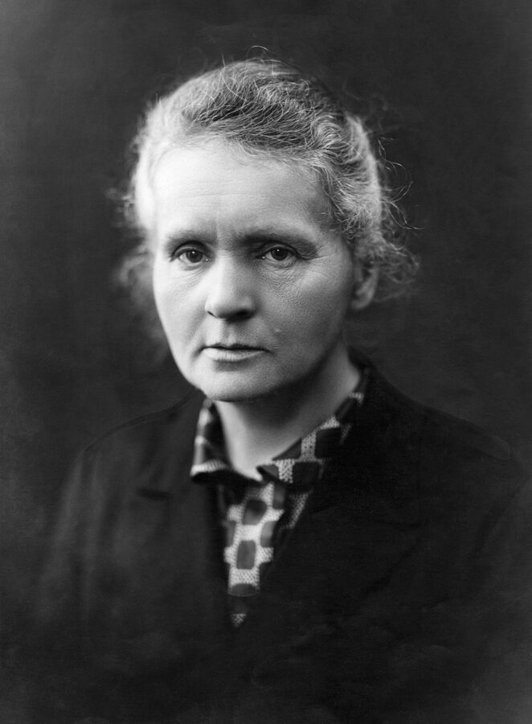
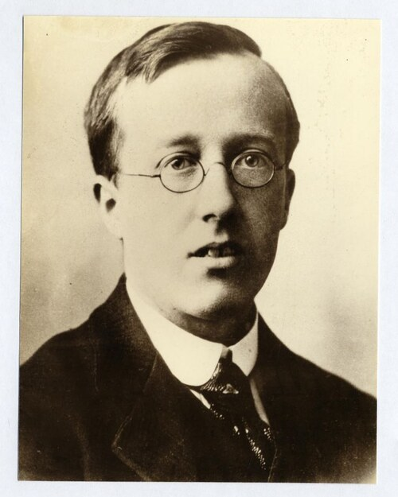
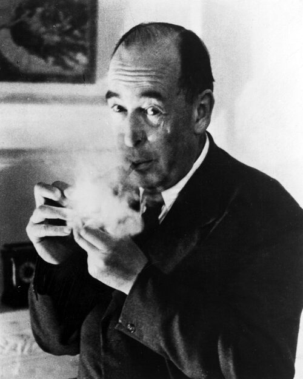

Psychology · Learning Science · Creativity Research
The Psychology of Polymaths
Why do some minds refuse to pick a lane — and what actually happens when they don't? Nobel laureates who paint and play instruments, athletes who try three sports before choosing one, engineers who quote poetry: the pattern isn't scattered ambition, it's a specific cognitive style with measurable advantages. This lesson breaks down the psychology of polymathy — the "multipotentialite" mind — using research on Nobel laureates, workplace cognition, and elite athletes, then turns it into three principles for making broad curiosity compound instead of dilute.
The Multipotentialite Mind
A "multipotentialite" is someone with many strong interests and creative pursuits rather than one true calling — a mind built to range across domains instead of tunneling into a single one. For most of the last century, this was treated as a phase to grow out of: pick a major, pick a lane, specialize. The polymath was a Renaissance curiosity, not a viable modern strategy.
The research tells a different story. Broad, serious engagement across fields isn't a distraction from expertise — in the people who reach the very top of their domains, it's often part of how they got there. That doesn't mean shallow dabbling wins. It means the relationship between range and depth is more interesting than "focus on one thing" suggests, and understanding that relationship is what turns scattered curiosity into an actual advantage.
What the Research Actually Shows
Three separate lines of research — on Nobel laureates, on workplace cognition, and on elite athletes — converge on the same conclusion from three completely different angles.
Nobel Laureates Aren't One-Trick Experts
Psychologists Robert and Michele Root-Bernstein studied the avocations of Nobel Prize winners in the sciences and found that laureates weren't narrow specialists who happened to win a prize. On average, a Nobel laureate maintained serious engagement — sustained practice, exhibited work, public performance, not just a casual hobby — in more than two separate fields entirely outside the one that won them the prize: painting, musical composition, glassblowing, poetry, magic, woodworking. The prize-winning specialty was never the whole story of the mind behind it.
Not hobbies squeezed in on weekends — sustained, serious practice outside the field that made them famous.
Cognitive Entrenchment: The Trap Depth Sets
Management scholar Erik Dane gave the cost of narrow depth a name in the Academy of Management Review: cognitive entrenchment. As expertise in a single domain deepens, mental representations of that domain calcify. Experts get faster at solving problems that resemble the ones they've already solved — and worse at noticing when a new problem doesn't actually match the old pattern. Depth without range can make an expert brittle exactly where their field is changing.
The 6,000-Athlete Study
In 2022, Arne Güllich, Brooke Macnamara, and David Hambrick published a meta-analysis pooling performance data on more than 6,000 athletes. The pattern held completely outside science and business: world-class performers typically sampled multiple sports as youths and progressed more slowly early on — specializing later — than athletes who committed to one sport early, rose faster at first, and then plateaued below the world-class tier, often stopping altogether. Early acceleration predicted an early ceiling; early range predicted a higher one.
Do these three studies actually measure the same thing?
Does this mean specializing is a mistake?
Three Unfair Advantages You're Carrying
If you've never been able to pick just one thing, here's what that's actually building — whether or not it's felt like an advantage yet.
Most genuinely novel ideas are recombinations of existing ideas from separate domains that nobody had connected before. A specialist can't make that connection — they only have one field's parts bin to draw from. You have several.
Cognitive entrenchment sets in when one domain's patterns become the only lens you own. Because no single field has fully calcified your thinking, you're quicker to notice when a new problem doesn't match the template everyone else is reaching for.
Being in the top tier of one field is a crowded line. Being genuinely competent at the intersection of two or three unrelated fields is a category of one — very few people accumulate the same specific combination you have.
These advantages only pay off if the scattered interests are pointed at something. Left alone, curiosity just diversifies — it doesn't compound by itself. That's what the next section is for.
Polymaths Across Time
The pattern isn't confined to one era or one field. Here are fifteen people, spanning nearly five centuries, best known for one thing — who were each quietly serious about something completely different. Several ran the pattern in reverse: a scientist whose hidden depth was theology, or a theologian whose hidden depth was science.

Known for: The Mona Lisa
Hidden talent: dissected more than 30 cadavers to master anatomy, then used that knowledge to design flying machines, canals, and war engines centuries ahead of their time.
Presumed self-portrait, c. 1512. Public domain.

Known for: the laws of planetary motion
Hidden talent: trained as a Lutheran theologian and treated astronomy itself as an act of worship, blending math, music theory, and biblical cosmology in Harmony of the World.
Portrait of Johannes Kepler, 1910 reproduction. Public domain.
Known for: Pascal's triangle and an early mechanical calculator
Hidden talent: after a profound religious experience in 1654, became one of history's sharpest Christian apologists, writing the Pensées in defense of the faith.
Portrait of Blaise Pascal, c. 1690, Palace of Versailles. Public domain.

Known for: the laws of motion and gravity
Hidden talent: spent decades on alchemy and biblical chronology, filling roughly a million private words on the two subjects — more than he ever wrote on physics.
Portrait of Isaac Newton. Public domain.
Known for: preaching revival across 18th-century Britain
Hidden talent: wrote and personally distributed a bestselling home medical guide, Primitive Physic, and ran early electrotherapy clinics to treat the poor for free.
Portrait of John Wesley, after George Romney, National Portrait Gallery, London. Public domain.
Known for: the kite-and-key experiment
Hidden talent: self-taught scientist who charted the Gulf Stream, invented bifocals and the lightning rod, and refused to patent any of it.
Benjamin Franklin, 1767, by David Martin. Public domain.

Known for: discovering the laws of inheritance with pea plants
Hidden talent: an Augustinian friar who ran the experiments that founded genetics as a side project inside his monastery, never leaving religious life to do it.
Gregor Mendel, c. 1862. Public domain.

Known for: alternating current and wireless power
Hidden talent: fluent in at least eight languages, with a claimed eidetic memory he used to visualize and refine entire machines before ever sketching them.
Nikola Tesla, photographed by Napoleon Sarony, c. 1890. Public domain.

Known for: two Nobel Prizes, in Physics and Chemistry
Hidden talent: designed mobile X-ray units — nicknamed "petites Curies" — and personally drove them to WWI battlefields to help surgeons locate shrapnel.
Marie Curie, c. 1900. Public domain.

Known for: The Planets
TransferSanskrit + astrology → music
Holst pursued ideas outside music when he heard musical possibilities in them. He learned Sanskrit to make his own translations for musical settings. Later, writer Clifford Bax — brother of composer Arnold Bax — discussed astrology with him, and Holst read Alan Leo's What Is a Horoscope? Whatever Holst believed literally, he transferred the planets' symbolic characters into orchestral “mood pictures.”
Gustav Holst, 1901. Unknown photographer. Public domain.

Known for: the theory of relativity
Hidden talent: a serious amateur violinist who performed publicly throughout his life and once said that if he hadn't become a physicist, he'd probably have been a musician.
Albert Einstein, 1921. Harris & Ewing Studio. Public domain.

Known for: Narnia and other popular fiction
Hidden talent: an Oxford and Cambridge professor of medieval and Renaissance literature who became one of the 20th century's most influential lay theologians and Christian apologists.
C. S. Lewis, dust-jacket photograph, 1957, by John S. Murray. Public domain.
Known for: leading roles in 1930s–40s Hollywood cinema
Hidden talent: co-invented a frequency-hopping radio guidance system during WWII — the same principle underlying today's Wi-Fi, GPS, and Bluetooth.
Hedy Lamarr, publicity photo, 1944. Public domain.
Known for: a Nobel Prize in Physics and Feynman diagrams
Hidden talent: a genuinely skilled bongo player and self-taught visual artist who sold drawings under the pseudonym "Ofey."
Public domain.
Known for: co-writing "We Will Rock You" and "Bohemian Rhapsody"
Hidden talent: paused his music career to finish a PhD in astrophysics decades later, and has since co-authored research on interplanetary dust.
Brian May, 2025, by Gage Skidmore. CC BY-SA 4.0.
Three Principles for Compounding Curiosity
The goal isn't collecting hobbies — it's building a set of interests that talk to each other. Here's how to get scattered curiosity compounding without amputating the range that makes it valuable.
1. Keep One Foot Planted
Pick an anchor field — the one you're willing to go deepest in — so the other interests have somewhere to attach instead of drifting independently. This mirrors the Nobel laureate pattern exactly: one prize-winning specialty, plus two or more serious pursuits orbiting it. The anchor doesn't limit the range; it gives the range something to compound into.
2. Hunt for Transfer, Not Just Topics
Don't just collect new subjects — actively translate a method, model, or metaphor from one field into another. A rhythm concept from music applied to pacing an essay. A load-bearing idea from engineering applied to structuring an argument. This is the direct antidote to cognitive entrenchment: it forces old patterns to meet new material on purpose, instead of by accident.
3. Force Collisions With Projects
Interests compound when a project requires two or more fields to meet at once — not when they sit side by side on a resume. Choose work, questions, or projects that can't be finished with only one of your fields. That collision is the actual mechanism that turns "I have a lot of interests" into "I own a genuine intersection."
Common Doubts, Answered With the Research
Isn't specialization required to get good at anything?
Doesn't switching between fields just waste time compared to picking one and grinding?
What if I don't have an anchor field yet?
Now It's Up to You
Long ago, the quadrivium built cross-field thinking right into the curriculum — math, music, and the stars, taught as one subject. Later, STEAM tried to rebuild that bridge inside modern classrooms. But no school hands you a polymath's education today. That part is now entirely up to you.
Practice Problems
Test what you know about the research and the principles.
Easy1. According to the Root-Bernsteins' research, the average Nobel laureate maintained serious engagement in how many fields outside their prize-winning work?
Easy2. What term did Erik Dane use, in the Academy of Management Review, for the rigidity that can come with deep single-domain expertise?
Medium3. The 2022 analysis by Güllich, Macnamara, and Hambrick pooled performance data on how many athletes? Enter the number rounded to the nearest thousand.
Medium4. Compared to athletes who specialized early and rose fastest at first, world-class performers typically…
Medium5. Principle 1 suggests keeping an anchor field and letting a second field orbit it. If someone spends 10 hours a week on their anchor field and caps a second, connected field at 40% of that anchor time, how many hours a week do they spend on the second field?
Challenge6. Which "unfair advantage" describes pulling a solution from one field to solve a problem in a completely unrelated one?
Challenge7. Per Principle 3, what actually turns scattered interests into a compounding advantage?